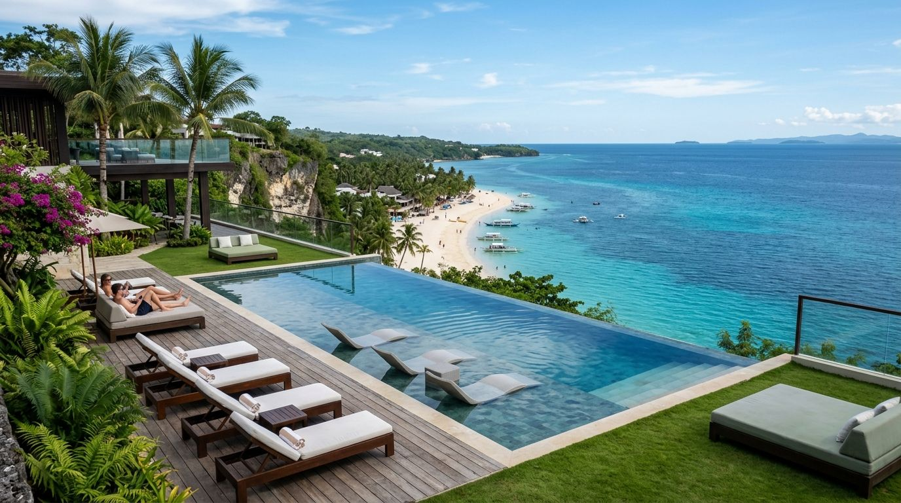

Asia's premier dive and island sanctuary. Famous for crystal-clear thermocline lakes, 1944 Japanese WWII shipwrecks, and dramatic coral walls.
Key regional features, luxury accommodation standards, and seamless logistics that make Coron an effortless recommendation for your travelers.

Renowned as the cleanest body of water in Asia, featuring dramatic underwater rock formations and thermoclines.

Twelve intact 1944 Japanese supply ships preserved underwater in shallow bays, suitable for both divers and snorkelers.

Vibrant coral reef gardens teeming with sea turtles, stingrays, and tropical marine life.
Early morning private banca charter arriving before crowds to experience serene turquoise waters.
Inquire for more details →
Guided dive or snorkel over coral-covered historical wrecks resting in clear sheltered waters.
Inquire for more details →


5★ LUXURY ECO RESORT5-star eco-friendly luxury resort offering beachfront bungalows, house reef diving, and private boat transfers.
Inquire for more details → 4★ BOUTIQUE RESORT
4★ BOUTIQUE RESORT
Boutique eco-lodge with rooftop infinity jacuzzis overlooking Busuanga Bay.
Inquire for more details →Pandora Travel handles VIP airport fast-tracks, private chauffeured luxury SUVs, and private outrigger banca charters.
Optimal booking months run November through April with dry, sunny weather and calm seas for island hopping.
Private seafood beach barbecues, elevated regional tasting menus, and curated rooftop dining reservations.
Combine Coron with direct domestic flights or fast-ferry links to minimize transit time between island highlights.